Conceal: what the editor draws instead¶
A configuration file is full of values written for the machine that reads them.
10485760 is ten mebibytes, 1722945600 is a Tuesday afternoon, 0644 is
rw-r--r--, */5 * * * * is every five minutes. You can work all of that out
by hand. Conceal is IKE doing it for you, in place, while you keep editing
the bytes that are actually in the file.
The same layer hides characters that only exist to carry structure — the **
around bold text, the commas between CSV fields, the ANSI escape bytes in a
log — so the line reads as what it means.
All screenshots on this page use the monokai-pro theme.
The one rule¶
Everything on this page obeys the same three guarantees, and they are the reason concealing is safe rather than clever:
- Nothing is rewritten. Conceal is a rendering layer. The buffer, the file on disk, what you copy, what you save, what Git diffs — all unchanged. A decoded timestamp is drawn over the digits, not instead of them.
- The caret reveals. The stand-in the caret sits inside renders raw,
while the rest of the line stays decoded. Move away and it decodes again.
That is vim's
concealcursorgranularity, and it is why you can edit concealed text without editing blind. - Every family has an off switch — a setting for the default and a palette command that flips it for the current view only. The table at the bottom lists all of them, along with the file patterns that decide where they apply.
Here is rule 2. A JSON file with its epoch timestamps decoded:
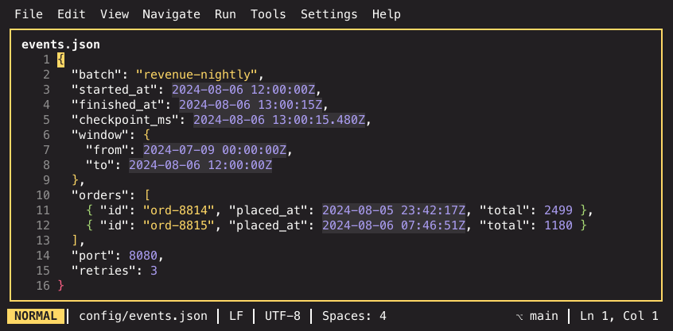
…and the same file with the caret moved into the started_at value on line 3.
Only that one number is raw; the other five are still dates:
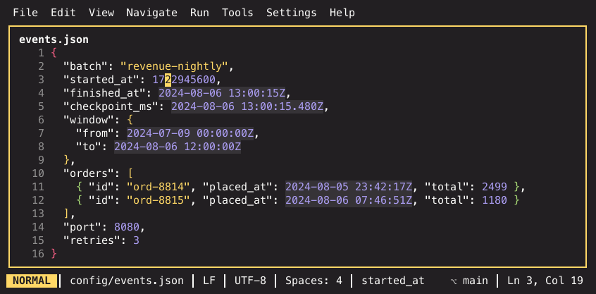
A selection reveals the same way: any stand-in the selection touches renders raw, so a visual-mode yank always copies what is really there. (It would anyway — the clipboard takes buffer text, not display text — but seeing it helps.)
Reveal next to the value, not only inside it¶
For the families that stand in for a value — decoded epochs and the four number-readability families — the window is one column wider on each side. Put the caret directly before or directly after the literal and it reveals too:
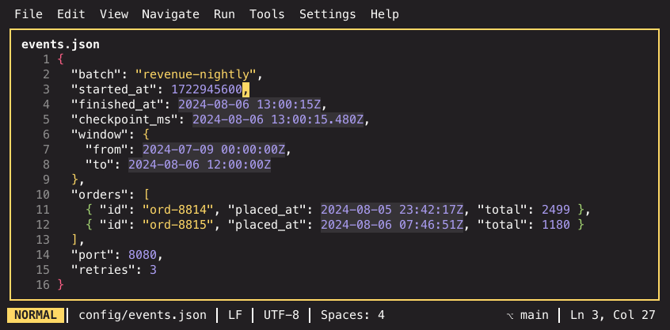
The caret is on the comma at column 27, past the end of the number, and the
number is raw. Without that widening, appending a digit to a value would mean
typing against a stand-in you cannot see. Marker chrome (Markdown's **),
masked secrets and CSV separator padding keep the strict inside-only rule:
those ranges are dense, and widening them would flicker a whole line as you
move through it.
Timestamps¶
editor.timestamp_decoding draws a numeric Unix epoch as its UTC date and
time. Seconds and milliseconds both decode — a millisecond value keeps its
.480 fraction. Raw first:
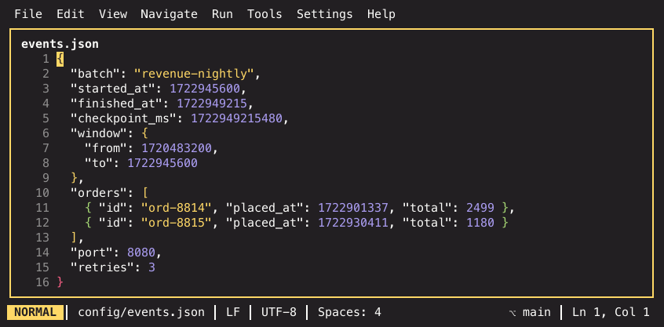
Decoded:
Only 9–10 digit second values and 12–13 digit millisecond values between 2001
and 2100 decode, and a leading zero disqualifies a run — so ports, byte counts,
ids and years are left alone. Beyond that the rule is position: a number
decodes where the format puts a value, never where it puts a key. In JSON
that means after a :, [ or ,; elsewhere = opens a value and & closes
one, so KEY=1722945600, a YAML created_at:, a TOML assignment and a
?since=… query parameter all decode.
It works in JSON and ndjson, YAML, TOML, ini/conf, dotenv, .http files and
log lines. The HTTP response viewer has no caret, so it has no positional
reveal and stays out of this layer; save a response as .json and it decodes
like any other buffer.
Number readability¶
Four families turn a large integer into the thing it means, all on by default:
| Family | Example | Setting | Per-view toggle |
|---|---|---|---|
| Byte sizes | 10485760 → 10 MiB |
editor.byte_size_hints |
Toggle Byte Size Hints |
| Durations | 86400000 → 24h |
editor.duration_hints |
Toggle Duration Hints |
| Digit grouping | 1204880 → 1_204_880 |
editor.digit_grouping |
Toggle Digit Grouping |
| Radix | 0x1F4 → 0x1F4 = 500 |
editor.radix_hints |
Toggle Radix Hints |
The first three replace the literal; the radix hint is appended after it, because a hex literal is usually the thing you want to keep looking at. Raw:
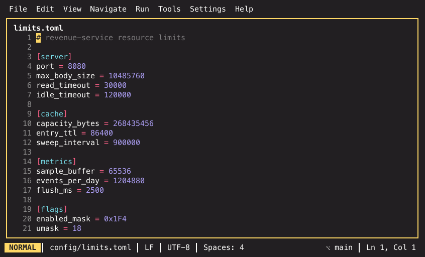
With the hints:
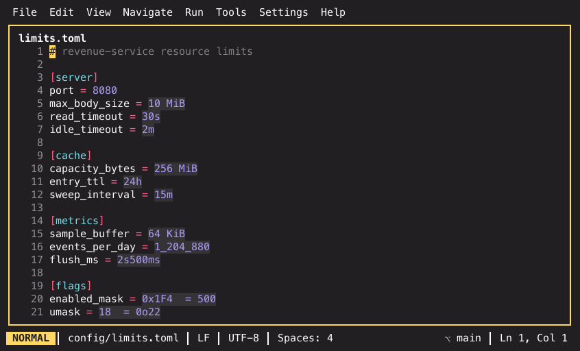
Config formats carry no types, so the key decides how a value is read:
*size*, *bytes*, *memory*, *buffer* name a byte count; the timeout
family (*timeout*, *interval*, *delay*, *backoff*) counts milliseconds
and the TTL family (*ttl*, *expires*, *lifetime*, *max_age*) counts
seconds, unless the key's last word spells the unit out (flush_ms,
*_seconds). *mode*, *perm*, *umask* read octal; *mask*, *flags*
read hex. Weak quantifiers — limit, max, quota — name no family on their
own, because a rate limit is not a byte count.
Where no key helps, the shape does: a multiple of 1024 is a byte size
wherever it appears, a 0x literal always has a decimal reading, and a plain
integer of five digits or more always reads better grouped. A literal never
carries two hints — the families are tried in a fixed order.
The formatting is deliberately conservative. Sizes are binary (4 KiB,
1.5 GiB; nothing below 1 KiB, no decimal kB). Durations use at most two
components (1h30m, 1s500ms) and only reach for days past 48h, so
neighbouring timeouts stay comparable. Grouping starts at five digits, because
four-digit numbers are years, ports and status codes. A hint that would say
nothing new — 500 in a *_ms key, 0x9, mode: 7 — is not drawn at all.
Tokens glued to ., -, +, /, % or a letter never parse as bare
integers, so versions, ISO dates, floats, paths, percentages and 30s-style
suffixed values are safe. Keys are safe by construction: the scanner only ever
hints a token that follows a separator.
When the field name knows better¶
The heuristics are ambiguous by nature. Is a retention counted in seconds or
in days? Is a span bytes or rows? Is an id that happens to be ten digits a
timestamp? Left alone, the guesses can be wrong:
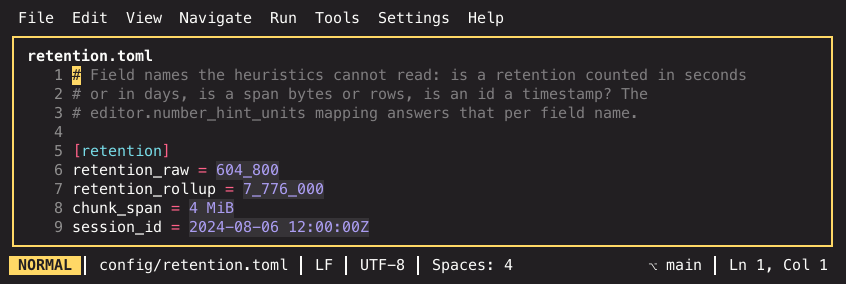
editor.number_hint_units (Settings → Editor) maps field names to units and
ends the guessing. Each entry is written pattern=unit:
[editor]
number_hint_units = ["retention_*=s", "chunk_span=bytes", "session_id=none"]
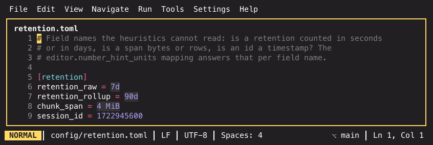
Patterns match case-insensitively over the whole field name with * wildcards,
and a camel-case name is matched in its snake_case form too, so max_body_size
also covers maxBodySize. Earlier entries win, so a specific name can precede
a wildcard that covers it. The units are bytes, a duration unit (ns, us,
ms, s, min, h, d, or the spelled-out forms), timestamp-s,
timestamp-ms, octal, hex, group and none.
A mapped field is read in that unit and no other: the shape triggers and
the built-in key words are not consulted, a value the unit says nothing about
stays bare rather than falling through to another family, and none silences
every stand-in over that field — timestamp decoding included, which is exactly
what session_id needed above.
Constants in code¶
The same families reach into Python, Go and PHP source: a constant
assignment reads by its name exactly like a config value reads by its key —
including your number_hint_units mapping — and a right-hand side that is
pure literal arithmetic is evaluated first:
MAX_BYTES = 10 * 1024 * 1024 # draws as 10 MiB
TIMEOUT_MS = 30 * 1000 # draws as 30s
SECONDS_PER_DAY = 60 * 60 * 24 # draws as 86_400
What counts as a constant is what marks one in each language: a CONST_CASE
name in Python (MAX_BYTES, annotated forms like RETRIES: Final = 3
included — lowercase assignments never conceal), a const declaration in Go
(single-line or inside a const ( … ) block, any name case), and const or
define('NAME', …) in PHP.
The evaluator is deliberately strict: number literals and the side-effect-free
integer operators only (+ - * / % << >> & | ^, parentheses, unary sign),
computed with each language's own precedence and literal syntax. An
expression containing an identifier (iota, self::BASE), a call, a float
or a string stays raw, as does anything the languages disagree on — inexact
division, negative remainders — or that overflows. A single 0x/0o/0b
literal gains its decimal reading appended instead (0xCAFE = 51_966), the
same way hex reads in config files.
These conceals ride the same channels as the config hints: the same four settings and per-view toggles gate them, and the caret reveals the raw expression as everywhere else.
Escaped text¶
Three families decode escapes in place, each with its own switch:
| Family | Setting | Per-view toggle |
|---|---|---|
\uXXXX in string literals |
editor.unicode_escape_decoding |
Toggle Unicode Escape Decoding |
| HTML/XML character references | editor.entity_decoding |
Toggle Entity Decoding |
| base64 values | editor.base64_decoding |
Toggle Base64 Decoding |
Unicode escapes. A JSON file written by a serializer that escapes everything non-ASCII:
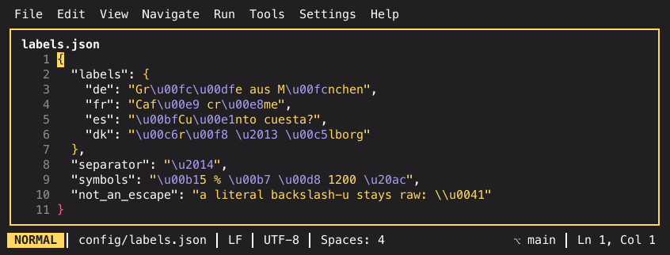
Decoded — surrogate pairs combine into the one character they encode:
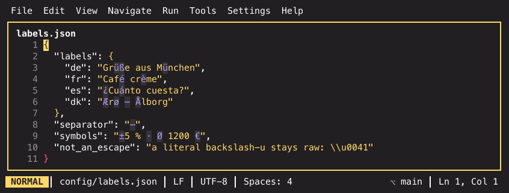
Decoding only happens inside a single-line " or ' literal, which is where
JSON, JavaScript/TypeScript and Go put escapes. The scanner walks the quote
state and consumes escapes pairwise, so the \\u0041 on the last line stays
raw — it is a literal backslash, not an escape. A truncated escape, a lone
surrogate, or a value that is not a printable character also stays raw.
HTML and XML entities. &, %, → and the rest draw as
the characters they name:
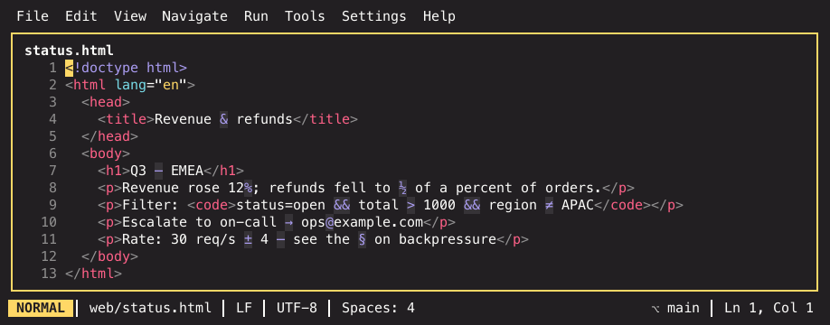
HTML decodes by the full named-entity table; XML decodes only the five predefined entities plus numeric references, because any other name is document-defined and guessing the HTML table would lie. References to non-graphic code points (zero-width joiners, controls) stay raw on purpose: an invisible stand-in would hide that the reference is there at all.
Base64. Decoded only where base64 is the convention, never on every
base64-looking string — in practice, the data: block of a YAML document
declaring kind: Secret, and only when the payload decodes to printable
single-line UTF-8:
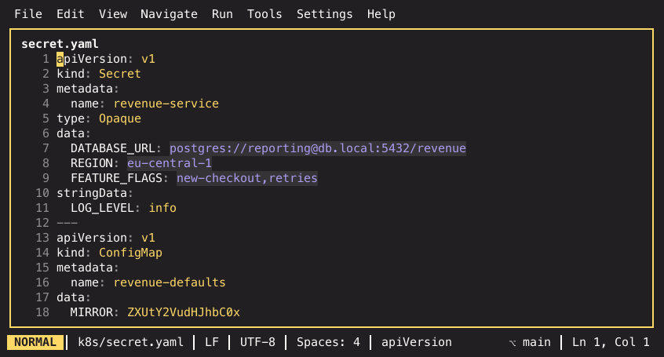
stringData: holds plaintext and is never touched, the ConfigMap in the
second document is not a Secret so its data: stays raw, and a binary payload
stays raw everywhere.
Percent-encoded URLs¶
A .http query travels percent-encoded, and percent-encoded is unreadable.
IKE draws the decoded characters — %20 as a space, %C3%A4 as ä — across
query parameters, folded query continuation lines, header values and inline
bodies:

caf%C3%A9%20m%C3%BCnchen reads as café münchen, open%2Cpending as
open,pending, and the encoded path segment acme%20gmbh as acme gmbh. A
stand-in that decodes to a space still gets the subtle background tint every
stand-in carries, so a decoded space never looks like an ordinary one. The
&since= value on the last line shows the epoch decoding working in the same
file — hint families compose.
More on .http files in The HTTP client.
Cron expressions¶
editor.cron_hints appends a cron expression's English reading after it. The
expression itself stays on screen — the hint is an annotation, not a
replacement, because a schedule is edited far more often than it is read:
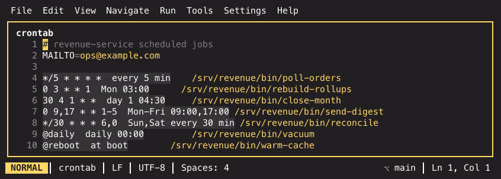
The dialect is the standard five fields with an optional leading seconds field
(the Quartz/Spring six-field form), plus ranges, steps, lists, names (MON,
JAN), ? and the @daily/@reboot shorthands. The extensions that need a
calendar — L, W, # — and a seventh year field are rejected outright:
no hint beats a wrong one. systemd's OnCalendar= is a different language and
is not handled.
Hints appear in crontab files, in CI YAML cron:/schedule: values (GitHub
Actions, GitLab CI), and in quoted scalars in YAML, JSON and TOML. The quoted
case additionally demands a cron-specific character or a field name, so a
quoted list of numbers like "1 2 3 4 5" is never mistaken for a schedule.
Cron ORs day-of-month against day-of-week when both are restricted, which the
reading says out loud (day 15 or Tue 03:30) rather than quietly picking one.
File modes¶
editor.permission_hints appends the symbolic form ls would print after an
octal mode — the reading nobody computes by eye:
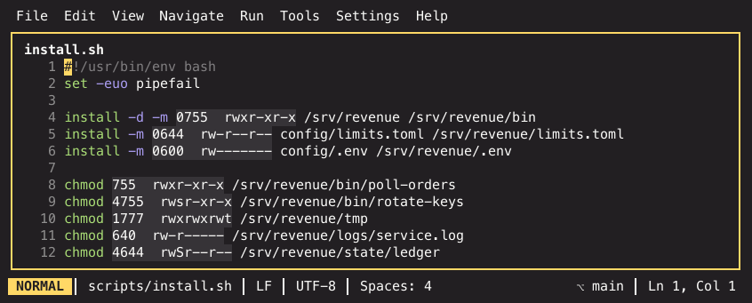
Three or four octal digits, written bare (755), zero-prefixed (0644) or
with the Go/Python 0o prefix. The fourth digit is the special-bit field:
4 setuid, 2 setgid, 1 sticky, each replacing the execute character of its triad
— 4755 is rwsr-xr-x, 1777 is rwxrwxrwt, and 4644 is rwSr--r-- with
the capital S that means "setuid, but no execute bit under it".
The context carries the whole burden here, because a bare three-digit number is
a port or a year far more often than a mode. Only things that genuinely carry
a permission produce a hint: chmod's first operand and the -m/--mode value
of install/mkdir in shell, COPY --chmod= and RUN lines in Dockerfiles,
the mode arguments of os.Chmod, os.WriteFile, os.MkdirAll, os.chmod and
Path(…).chmod(…) in Go and Python, and mode:/defaultMode: keys in YAML
and Ansible.
In code and YAML the literal must also be written as octal. That is
deliberate: in Go and Python a bare 644 is decimal, and in Ansible
mode: 644 really is the decimal 644 — the classic footgun. That case falls to
the radix hint instead, which says 644 = 01204 and so states the problem
rather than papering over it.
Network literals¶
Two literals nobody reads by eye get their meaning appended, both on by default:
| Family | Setting | Per-view toggle |
|---|---|---|
| CIDR prefixes | editor.cidr_hints |
Toggle CIDR Hints |
| Punycode hostnames | editor.idn_hints |
Toggle IDN Hints |
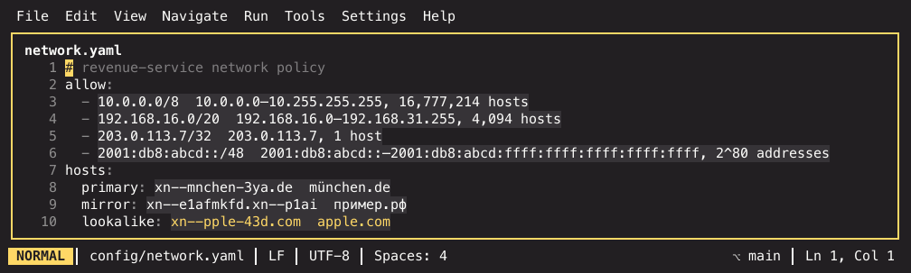
Host counts follow the protocol: IPv4 subtracts the network and broadcast
addresses, except on the point-to-point prefixes where there are none to
subtract, so a /31 carries 2 hosts and a /32 one. IPv6 has neither, so its
prefixes count addresses, and the ones too large to read stay a power of two.
A prefix with host bits set describes the network the address falls in, which
is what the notation means to the parser reading it.
Punycode decoding turns every xn-- label back into its Unicode form, keeping
any :port suffix. The last line of the shot is the reason this family earns
its place: xn--pple-43d.com decodes to something that reads as apple.com
but is not — the first letter is Cyrillic. A label that mixes scripts, or a
non-Latin label spelled entirely in Latin look-alikes, is drawn in the
theme's warning colour. The script combinations ordinary names use — Han with
kana, Han with Hangul, Han with Bopomofo — are not homographs and stay normal.
Whole lines are scanned where every line is data (YAML, JSON, TOML, ini,
dotenv, .http); in source files only string literals are scanned, because
a bare 10.0.0.0/8 in code is arithmetic.
Certificates and PEM blocks¶
editor.pem_summary collapses a PEM block onto its -----BEGIN …----- line
with a decoded one-line summary, so a .pem file — or a certificate pasted
into a YAML block scalar — reads as facts instead of forty lines of base64:
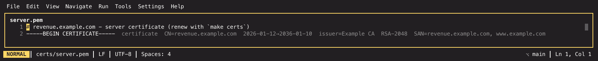
Subject CN, validity window, issuer CN, key type and SANs, in that order — the order that survives a narrow pane, since the row truncates from the right and the CN is the last thing to go. An expired or not-yet-valid certificate draws in the error colour and bold; one expiring within 30 days in the warning colour. A healthy certificate carries no verdict text at all: the dates already said so, and a summary that shouts on every healthy block teaches you to ignore it.
This one reveals by cursor position like the rest, but a block is not a line, so the whole block comes back at once. Put the cursor anywhere inside it:
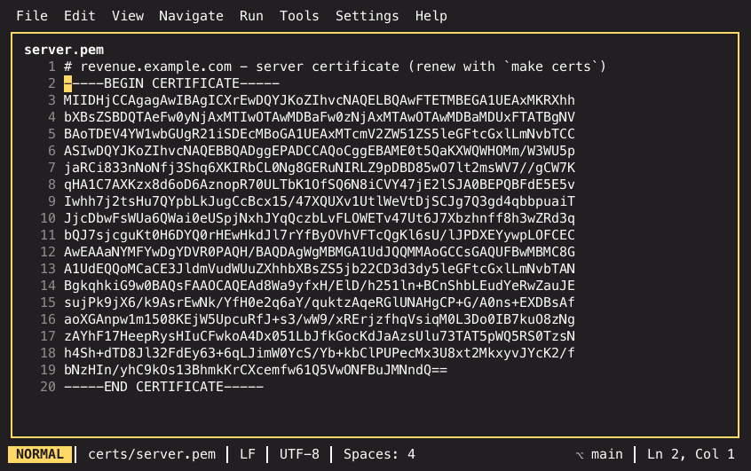
Leaving collapses it again. The collapsed block costs exactly one row of scrolling, and motions, mouse clicks and the gutter all treat the hidden lines as hidden.
Decoding depth is asymmetric on purpose. CERTIFICATE decodes fully.
CERTIFICATE REQUEST and PUBLIC KEY decode to their subject and key facts.
Private keys are never parsed — they get a label built from the marker text
that was already on screen (private key (rsa), private key (encrypted)) and
nothing more, because a summary that renders a secret defeats the point of the
file being opaque. Anything that fails to parse falls back to
<label> (unparseable): a wrong summary is worse than no summary. An
unterminated block is never claimed at all.
Masked secrets¶
editor.secret_masking renders a dotenv value as •••• when its key names
a credential:
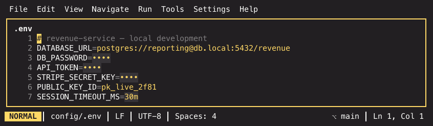
The key alone decides — *_SECRET, PASSWORD, *_TOKEN, *_KEY,
CREDENTIALS, DSN and friends — and keys that only look like one are cleared
again: PUBLIC_KEY_ID above is untouched, as are TOKEN_URL, AUTH_TYPE and
AUTHOR. The value itself is never inspected to decide whether to hide it.
The mask is fixed width. Sizing it to the value would leak the value's length, which for a short password is most of the secret.
House-style keys the built-in patterns never heard of go in
editor.secret_masking_keys. Each entry is matched case-insensitively over the
whole key name with * wildcards, and a - (or !) prefix exempts instead of
masking:
[editor]
secret_masking_keys = [
"MY_API_KEY", # a key the built-in patterns miss
"*_LICENSE", # …and every key ending in it
"db_pass*",
"-PUBLIC_TOKEN", # a key the built-in patterns would mask, kept readable
]
Earlier entries win, so a specific name can precede a wildcard covering it, and
a key no entry matches falls through to the built-in patterns. The list only
decides which keys are secrets — masking still needs editor.secret_masking
on and the file to pass the file filters.
It is not a decode, but it rides the identical mechanic, so the positional
reveal applies unchanged: put the caret inside a value and the raw secret is
there to read and edit. A masked value copies, saves and diffs as itself. Note
what else the shot shows — SESSION_TIMEOUT_MS=1800000 drawing as 30m,
because the duration hints work in dotenv files too.
Markup: Markdown, CSV and logs¶
The three rendering layers hide characters that exist only to carry structure. They are covered in full, with their own before/after shots, in How files are rendered — the short version:
- Markdown (
editor.markdown_rendering) conceals the**,*,`and link chrome, and draws pipe tables with box characters. Reveal is finer-grained here than anywhere else: a caret anywhere inside an inline span reveals that span's markers (not just a caret on the marker itself), and in a table only the cursor's cell shows raw source while the frame stays drawn. - CSV/TSV (
editor.csv_rendering) conceals each separator behind the padding that aligns its column. Only the separator the caret sits on reverts to its raw character, so the rest of the table stays aligned while you edit. - Logs (
editor.log_rendering) conceals ANSI escape bytes and draws the styles they mean. A run of repeated lines collapses to the first one with a×Nmarker, and the caret brings the whole run back — the same positional reveal, applied to rows instead of columns.
Two things that look like conceal and are not¶
Colour swatches (editor.color_preview) tint a colour literal's own cells
with the colour it names, foreground picked for contrast:
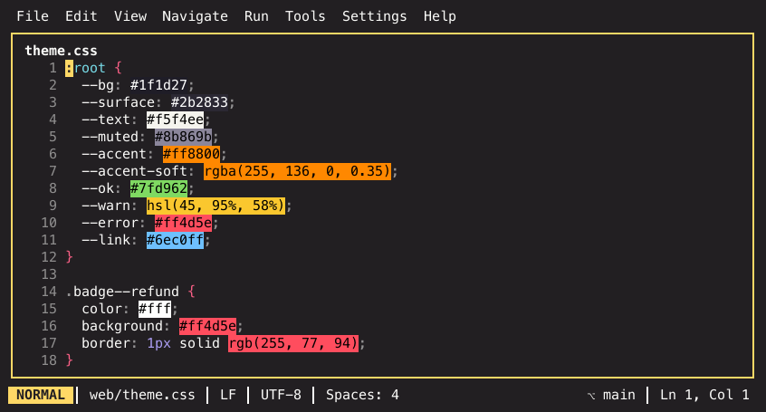
Nothing is hidden and no columns are added — the literal is still exactly where
it was, which is why motions, mouse clicks and soft wrap need no special
handling. #rgb, #rgba, #rrggbb, #rrggbbaa, rgb(), rgba(), hsl()
and hsla() are recognised; an invalid value (out-of-range channel, wrong
arity, five- or seven-digit hex) gets no swatch, and an alpha component parses
but does not tint, since a terminal cell has no alpha. In CSS every literal
tints; in every other language only literals in a value position do, so
accent = "#ff8800" lights up and the fragment in
https://example.com/p#ff8800 does not.
JWT decoding is deliberately not a conceal. A token is far too long to stand in for inline and its decoded form is multi-line JSON, so Decode JWT at Caret opens the header and payload in a hover popup instead. The signature segment is drawn faint wherever a token appears — a colour, not a stand-in, so those bytes always read as they stand.
The settings¶
Every family has a default in Settings → Editor and a palette command that
flips it for the current view only. A view toggle sticks: once flipped, that
view stops following the config value.
| Family | Setting | Per-view toggle |
|---|---|---|
| Markdown rendering | editor.markdown_rendering |
Toggle Markdown Rendering |
| CSV/TSV table rendering | editor.csv_rendering |
— |
| Log rendering | editor.log_rendering |
Toggle Log Rendering |
| Epoch timestamps | editor.timestamp_decoding |
Toggle Timestamp Decoding |
| Byte sizes | editor.byte_size_hints |
Toggle Byte Size Hints |
| Durations | editor.duration_hints |
Toggle Duration Hints |
| Digit grouping | editor.digit_grouping |
Toggle Digit Grouping |
| Radix readings | editor.radix_hints |
Toggle Radix Hints |
| Field→unit mapping | editor.number_hint_units |
— |
| Unicode escapes | editor.unicode_escape_decoding |
Toggle Unicode Escape Decoding |
| HTML/XML entities | editor.entity_decoding |
Toggle Entity Decoding |
| Base64 values | editor.base64_decoding |
Toggle Base64 Decoding |
| Cron expressions | editor.cron_hints |
Toggle Cron Hints |
| File modes | editor.permission_hints |
Toggle Permission Hints |
| CIDR prefixes | editor.cidr_hints |
Toggle CIDR Hints |
| Punycode hostnames | editor.idn_hints |
Toggle IDN Hints |
| PEM summaries | editor.pem_summary |
Toggle PEM Summary |
| Secret masking | editor.secret_masking |
Toggle Secret Masking |
| Extra secret key patterns | editor.secret_masking_keys |
— |
| Colour swatches | editor.color_preview |
Toggle Color Preview |
| Where the families apply | editor.conceal_include, editor.conceal_exclude, editor.conceal_file_rules |
— |
Percent-decoding in .http files has no switch of its own — it is part of how
the format is rendered.
Where they apply¶
The switches above are global: on means on everywhere. The second dimension is where, and it is written as file patterns:
[editor]
conceal_exclude = ["**/testdata/**", "*.min.js"]
editor.conceal_include restricts every family to the files it matches;
editor.conceal_exclude switches them off in the files it matches. Both are
lists of globs. A pattern without a separator matches the base name —
*.py, Makefile, *.{yml,yaml} — which is the per-filetype case. A pattern
with one matches the whole path, anchored at any segment boundary unless it
starts with / or **, so vendor/**, **/vendor/** and /etc/** all mean
what they read as. Matching ignores case.
Precedence is exclude > include > allow: with neither list set everything conceals (the pre-existing behaviour), an include list makes everything else stop, and an exclude match wins over any include.
editor.conceal_file_rules overrides both lists for a single family. Each
entry is written family=pattern, the pattern prefixed - for an exclude and
bare for an include, the family named by its setting key without the editor.
prefix:
[editor]
conceal_include = ["*.yaml", "*.env"] # conceal only in config files…
conceal_file_rules = [
"secret_masking=-**/testdata/**", # …but never mask the fixtures
"cron_hints=*.log", # …and read cron in logs anyway
]
A family whose own rules decide a file is done there — that is what makes the entry an override rather than a second opinion. A family with nothing to say about the file falls through to the two global lists. Within either level, exclude still beats include.
Two things this filter deliberately does not do. It never touches the toggles
themselves, so a family reads as on in Settings → Editor even in a file
where nothing draws — the pattern is a property of the file, not of the
family. And a per-view toggle beats it: flip Toggle Secret Masking in an
excluded buffer and the masks appear, because a pattern list states a default
and you just said otherwise. Editing the lists takes effect immediately, in
every open buffer, with no reload.
All of these default to on. The full descriptions, including the highlighting limits that apply to very large files (where the insight layers switch themselves off), are in the settings reference.
Related¶
- How files are rendered — highlighting, and the Markdown / CSV / log layers in full
- The modal editor — moving the caret that drives the reveal
- The HTTP client —
.httpfiles, where several families meet at once - Settings reference — every key on this page